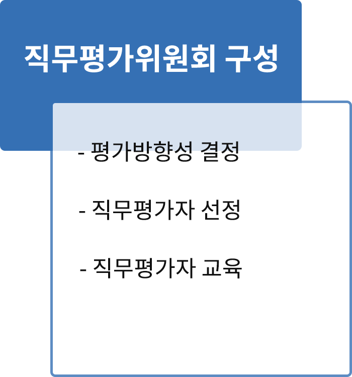
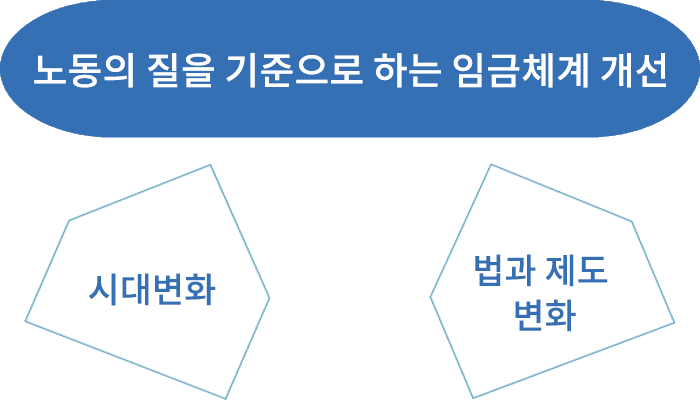

직무컨설팅
| 직무분석과 직무평가
| 직무평가 프로세스
| 임금체계 개선
| HR컨설팅 프로세스
직무분석과 직무평가
과거 고도성장기에 적합하였던 연공서열을 바탕으로 한 속인주의 인사관리 모델은 고령화, 노동시장 다양성, 저성장 경제 진입, 개인주의 사회환경 하에서는 더 이상 적합하지 않게 되었습니다. 이제는 노동의 질을 중심으로 하는 새로운 인사관리의 패러다임이 필요한 시대입니다. 사람중심의 관리에서 일 중심의 관리로의 전환을 하기 위해서는 직무분석과 직무평가는 필수적으로 선행되어야 할 작업입니다.
직무분류
직무분석
직무평가
결과활용
직무평가 프로세스
임금수준을 보다 합리적으로 결정하기 위해 직무의 가치를 측정하는 일련의 과정 또는 조직 내 상대적 가치를 평가하기 위한 과정

임금체계 개선
임금체계 개선이란 임금이 결정 및 조정되는 방식과 전통적인 연공급에서 직무급, 직능급, 역할급 등 임금결정체계를 방식을 개선하는 것을 의미합니다. 사람중심의 관리에서 일 중심의 관리로의 전환을 하기 위해서는 직무분석과 직무평가를 토대로 임금체계를 개선하는 작업이 필요합니다.

임금결정 체계
- 연공급
- 직무급
- 직능급
- 역할급 등
임금구성 체계
- 기본급
- 상여급
- 각종수당 등
임금지급 형태
- 고정급, 변동급
- 시급, 월급
- 연봉제 등
HR컨설팅 프로세스
STEP 01
현황파악
STEP 02
분석
STEP 03
디자인
STEP 04
실행
STEP 05
관리